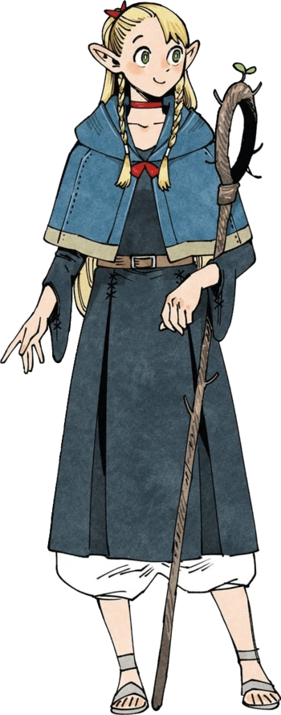

Marcille Donato / マルシル・ドナト

Marcille Donato is an elf, a humanoid race with long, pointed ears, slender builds, and very long lifespans relative to tall-men. She is the party's main mage after
Falin is eaten by the dragon. She is a graduate of Magic School, being the best student in her class. She plays by the books and has immense proficiency in her magical abilities, but can be seen as stubborn and high-strung, using her knowledge as a crutch without entertaining the idea that there are better ways to do things--a point of contention between her and
Senshi. She is initially repulsed by the idea of eating monsters, thinking it to be unsafe and unsettling. Still, she is deeply dedicated to the cause as she and
Falin have been best friends since Magic School. Though loyal to her friends, she can easily be annoyed with their antics, ultimately she cares a great deal about her fellow party members.